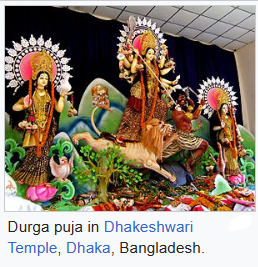
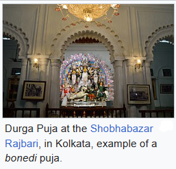
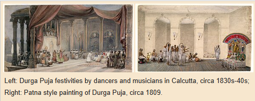
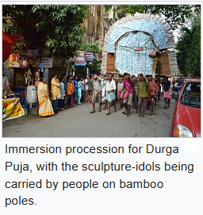
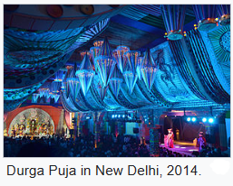
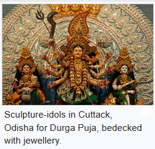

  
  
There exists variation in worship practices and rituals associated with Durga Puja, as is the case with other Hindu festivals, in the Indian subcontinent. Hinduism accepts flexibility and leaves the set of practices to the choice of the individuals concerned. Different localized rituals may be observed regionally, with these variations accepted across temples, pandals, and within families.
The festival is most commonly associated with Bengali Hindus, and with the community having variability and differences in practices. There may exist differences of practice between the puja of theme-based Pandals, family pujas (with puja of erstwhile aristocrat families known as bonedi puja), and community pujas (known as barowari pujas) of neighbourhoods or apartments.
The rituals of the puja also varies from being Vedic, Puranic, or Tantric, or a combination of these. The Bengali Durga Puja rituals typically combine all three. The non-Bengali Durga Puja rituals tend to be essentially Vedic (srauta) in nature but they too incorporate esoteric elements making the puja an example of a culmination of Vedic-Tantric practices.
Historical evidence suggests that the Durga Puja has evolved over time, becoming more elaborate, social, and creative. The festival had earlier been a domestic puja, a form of practice that still remains popular. But it had also come to be celebrated in the sarvajanin (public) form, where communities get together, pool their resources and efforts to set up pandals and illuminations, and celebrate the event as a "mega-show to share". The origins of this variation are unclear, with some sources suggesting a family in Kolkata reviving such celebration in 1411 CE. While other set of sources suggest that a Bengali landlord, named Kamsanarayan, held a mega-show puja in late 16th-century Bengal. Yet, this festival of Bengal is likely much older with the discovery of 11th and 12th-century Durga Puja manual manuscripts such as Durgotsavaviveka, Durgotsava Prayoga, Vasantaviveka and Kalaviveka. The rituals associated with the Durga Puja migrated to other regions from Bengal, such as in Varanasi, a city that has historically attracted sponsorship from Hindus from various parts of the Indian subcontinent including Bengal. In contemporary India, Durga Puja is celebrated in various styles and forms.
Durga Puja is a widely celebrated festival in the Indian states of West Bengal, Bihar, Jharkhand, Uttar Pradesh (eastern parts), Assam, and Odisha. It is celebrated over a five-day period. Streets are decked up with festive lights, loudspeakers play festive songs as well as recitation of hymns and chants by priests, and pandals are erected by communities. The roads become overcrowded with revellers, devotees, and pandal-hoppers visiting the pandals on puja days. It often creates chaotic traffic conditions. Shops, eateries, and restaurants stay open all night; fairs are also set up and cultural programmes are held. People form organizing committees, which plan and oversee the pandal during the festivities. Today, Durga Puja has turned into a consumerist social carnival, a major public spectacle and a major arts event riding on the wave of commercialisation, corporate sponsorship, and craze for award-winning. For private domestic pujas, families dedicate an area of their homes, known as thakur dalan, for Durga Puja where the sculpture-idols for worship is placed and decorated with home-dyed fabric, sola ornamentations, and gold and silver foil decorations. Elaborate rituals like arati are performed and prasad is distributed after being offered to the deities. As a tradition, married daughters visit their parents and celebrate the Durga Puja with them, a symbolism alluding to Durga who is popularly believed to return to her natal home during the puja.
Durga Puja is also a gift-giving and shopping season for communities celebrating it, with people buying gifts for not only family members but also for close relatives and friends. New clothes are the traditional gift, and people wear them to go out together during Durga Puja. During puja holidays, people may also go to places of tourist attractions while others return home to spend Durga Puja with their family. It's a common trend amongst youngsters and even those who are older to go pandal-hopping and enjoy the celebrations.
The organising committees of each puja pandal hires a purohita (priest) who performs the puja rituals on behalf of the community. For the priests, Durga Puja is a time of activity wherein he pursues the timely completion of Vedic-Puranic-Tantric ritual sequences to make various offerings and perform fire oblations, in full public view, while the socio-cultural festivities occur in parallel. The complex puja rituals include periods of accurate and melodic scripture recitation. The puja involves crowds of people visiting the pandals, with smaller groups visiting family pujas, to witness the celebrations. On the last day, the sculpture-idols are carried out in immersion processions across Bengal, following which they are ritually immersed into rivers or other waterbodies. The immersion ceremony continues till a couple of days after the last day of puja.
According to some scholars, the ritual of immersing the Durga sculpture-idol into the river attracted the attention of colonial era travelers to the Bengal region from Europe, such as Garcin de Tassy and Emma Roberts. In 1831, Tassy reported that similar rituals were annually observed by the Muslim community in Bengal. Shia Bengali Muslims observed Muharram over ten days, taking out processions in memory of the martyrdom of Imam Husayn ibn Ali, and then cast a memorial Imam's cenotaph into a river on the tenth day. Tassy further stated that the Bengali rituals of Muharram included the same offerings at the annual observation of Muharram that the Hindu rituals included during Durga Puja. According to yet other scholars, the ritual of immersion in water by Hindus for Durga Puja in Bengal and Ganesh Chaturthi in the western states of India, may have grown because members of the Hindu community attempted to create a competing procession and immersion ritual to that of Muharram, allowed by the colonial British Indian government in the 19th and early 20th-centuries.
In Maharashtra, the city of Nashik and other places such as CIDCO, Rajeevnagar, Panchavati, and Mahatmanagar host Durga Puja celebrations. While in Delhi, the first community Durga Puja was organized near Kashmiri Gate by a group of expatriate Bengalis, in 1910, a year before Delhi was declared the capital of British India. This group came to be the Delhi Durga Puja Samiti, popularly known as the Kashmere Gate Durga Puja. The Durga Puja at Timarpur, Delhi was started in the year 1914. In 2011, over 800 Durga Pujas were held in Delhi, with a few hundred more in Gurgaon and NOIDA.
In Odisha, Durga Puja is the most important festival of the people of the state. Durga Puja is a very important festival for Odias, during the 4 days of the festival, the streets of the city turns into a wonderland throughout the state, people welcome the arrival of their maa by rejoicing themselves, eating tasty food, wearing new clothes, seeing different pandals across the city, family gathering and gift givings. In 2019, ninety-seven pandals in Cuttack alone, Odisha were reported to bedeck respective sculpture-idols with silver jewelry for Durga Puja celebrations; such club of pandals termed regionally as Chandi Medha. The state capital is famous for the modern themes and creativity In the pandals, while the Western part of the state has a more retro decoration theme to the pandal. In the northern parts of the state particularly Balasore, Durga Puja is celebrated with much fervor and the Odia diaspora abroad especially in Australia, which originates 95% from the district of Balasore celebrates the puja in the same manner which is done back home in Balasore. In September 2019, 160 pandals were reported to be hosting Durga Puja in Cuttack.
While in Tripura there were over 2,500 community Durga Puja celebrations in 2013. Durga Puja has been started at the Durgabari temple, in Agartala by King Radha Kishore Manikya Bahadur.